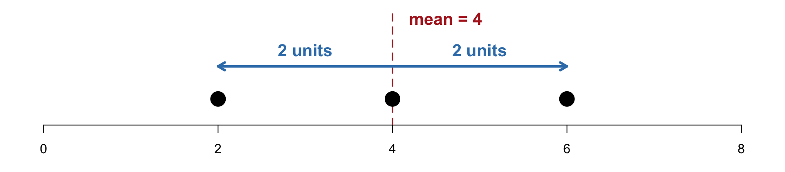
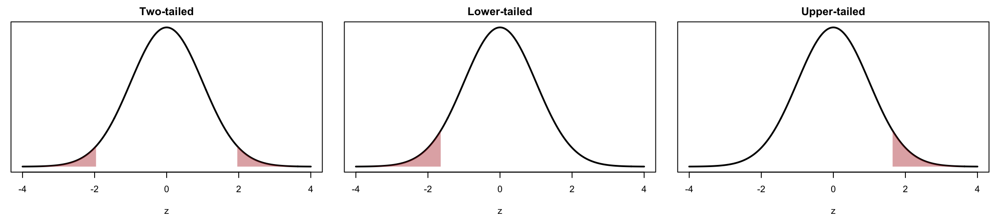

PSYC 2020-A01 / PSYC 6022-A01 | Lab 8
Learning objectives: R: simulating Type I error and power with a for loop
Statistics: sample vs. population variance, z-scores, directional tests, Type I / Type II errors, power
Data: 2, 4, 6 (\(n\) = 3)
Step 1. Find the mean
\[\bar{x} = \frac{2 + 4 + 6}{3} = \frac{12}{3} = 4\]
Step 2. Subtract the mean from each score (the deviation)
Step 3. Square each deviation and add them up: the sum of squares (SS)
| \(x\) | \(x - \bar{x}\) | \((x - \bar{x})^2\) |
|---|---|---|
| 2 | 2 − 4 = −2 | 4 |
| 4 | 4 − 4 = 0 | 0 |
| 6 | 6 − 4 = 2 | 4 |
| sum = 0 | SS = 8 |
ⓘ The deviations always add up to 0; that is why we square them
Sample (most of our data!)
Step 4. Variance: divide SS by \(n - 1\)
\[s^2 = \frac{\sum (x - \bar{x})^2}{n - 1} = \frac{8}{3 - 1} = 4\]
Step 5. SD: take the square root
\[s = \sqrt{4} = 2\]
Population (every member measured)
Step 4. Variance: divide SS by \(N\)
\[\sigma^2 = \frac{\sum (x - \mu)^2}{N} = \frac{8}{3} \approx 2.667\]
Step 5. SD: take the square root
\[\sigma = \sqrt{2.667} \approx 1.633\]
ⓘ Common midterm mistake: dividing a sample’s SS by \(n\). For a sample, divide by \(n - 1\). R’s var() and sd() already do this
\(s\) = 2: on average, the scores are about 2 units away from the mean of 4

○ The SD is in the same units as the data (points, cups, hours); the variance is in squared units
○ A bigger SD → scores are more spread out around the mean
○ The SD describes the whole dataset. It does not tell us where any one score falls: that is the job of a z-score
\[z = \frac{x - \bar{x}}{s} \qquad \bar{x} = 4, \; s = 2\]
| \(x\) | \(z\) |
|---|---|
| 2 | (2 − 4) / 2 = −1 |
| 4 | (4 − 4) / 2 = 0 |
| 6 | (6 − 4) / 2 = +1 |
| One dataset has… | |
|---|---|
| one mean | 4 |
| one variance | 4 |
| one SD | 2 |
| three z-scores | one per observation |
\(z\) = +1: the score 6 is 1 SD above the mean
The SD (2) is not a z-score: it is the typical spread of the whole dataset
Two questions many of you missed on Quiz 6:
For a two-tailed test with \(\alpha\) = .05, the critical values of \(z\) are ± ______. For a one-tailed test with \(\alpha\) = .05, the critical value of \(z\) is ______, ignoring the sign.
A hypothesis that predicts a difference without specifying its direction is called a ______ hypothesis, and it is tested with a ______-tailed test.
ⓘ Keep these in mind. By the end of today’s lab you should be able to answer both, and they are on the Lab 8 assignment!
\[z_{\bar{x}} = \frac{\bar{x} - \mu}{\sigma / \sqrt{n}}\]
1. State the hypotheses
2. Set \(\alpha\) = .05 and find the critical value
3. Compute \(z\) and its p-value, assuming \(H_0\) is true
4. Make a decision
| Decision | |
|---|---|
| \(p \le \alpha\) or \(|z| \ge |z_{crit}|\) | Reject \(H_0\) (significant) |
| \(p > \alpha\) or \(|z| < |z_{crit}|\) | Fail to reject \(H_0\) (not significant) |
ⓘ Never say we “accept” \(H_0\) or that \(H_0\) is true
Normal cats: \(\mu\) = 100 g, \(\sigma\) = 40. A sample of \(n\) = 16 cats with prenatal alcohol exposure has \(\bar{x}\) = 70. Does alcohol affect birth weight?
\(z\) = −3 is far in the rejection region
\(p\) < .05 → reject \(H_0\)
Prenatal alcohol exposure has a statistically significant effect on cats’ birth weight
ⓘ Lecture reports the one-tail area, pnorm(-3) = .00135; two-tailed p = .0027. Same decision
The p-value is the probability of getting a test statistic equal to or more extreme than the one we observed, assuming \(H_0\) is true
Cats: assuming \(\mu\) = 100 is true, the probability of a sample mean (\(n\) = 16) at least as far from 100 as 70 is
○ The smaller the p-value, the stronger the evidence against \(H_0\)
○ It is not the probability that \(H_0\) is true
Non-directional → two-tailed test
“There is a difference…”
○ \(H_1\): \(\mu \neq \mu_0\)
○ \(\alpha\)/2 = .025 in each tail
○ \(z_{crit}\) = ±1.96
Directional → one-tailed test
“…increases / decreases / better than…”
○ \(H_1\): \(\mu > \mu_0\) (upper) or \(\mu < \mu_0\) (lower)
○ all of \(\alpha\) = .05 in one tail
○ \(z_{crit}\) = +1.65 or −1.65

Directional: 1, 2, 4 | Non-directional: 3
Your professor believes extra homework changes final exam scores. Population: \(\mu\) = 70, \(\sigma\) = 15. A sample of \(n\) = 25 students who got 50 extra HW questions a week scored \(\bar{x}\) = 75.
Check: \(z = \dfrac{75 - 70}{15 / \sqrt{25}} = \dfrac{5}{3}\) = 1.67, which is less than 1.96 → retain \(H_0\)
Now your professor believes extra homework increases final exam scores (same data: \(\mu\) = 70, \(\sigma\) = 15, \(n\) = 25, \(\bar{x}\) = 75)
Same data, same \(z\) = 1.67…
○ Two-tailed: 1.67 < 1.96 → retain \(H_0\)
○ Upper-tailed: 1.67 > 1.65 → reject \(H_0\)
This is why the direction must be decided before looking at the data!
| \(H_0\) true (no effect) | \(H_0\) false (effect exists) | |
|---|---|---|
| Reject \(H_0\) | Type I error (\(\alpha\)) “false alarm” | Correct: power (\(1 - \beta\)) |
| Fail to reject \(H_0\) | Correct | Type II error (\(\beta\)) “miss a real effect” |
○ \(\alpha\) = probability of a Type I error; we choose it (.05)
○ \(\beta\) = probability of a Type II error; not easy to know
○ Power = \(1 - \beta\) = probability of detecting a real effect
Pop quiz: if \(\beta\) = 40%, what is power? If \(\beta\) = 10%?
60% and 90%
What if \(H_0\) is true? Run 1,000 studies where the population really has \(\mu\) = 70, and count how often we wrongly reject
The same for loop as Lab 6, one study per loop
mean() of TRUE/FALSE = proportion of TRUE
We reject about 5% of the time, even though there is no effect
That 5% is \(\alpha\): the Type I error rate we chose
Now suppose extra homework really raises the mean to 75. We still test \(H_0\): \(\mu\) = 70. How often do we catch the effect?
Every rejection here is correct, so the proportion is the power
Power is under 0.4 (theory says 0.38): the “Evil” Professor’s study would miss a real 5-point effect most of the time
Change n to 100 and re-run. What happens?
Power goes up with
○ a larger difference from \(\mu_0\)
○ less variability (\(\sigma\))
○ a larger \(n\)
○ a larger \(\alpha\)
Learning check: testing \(H_0\): \(\mu\) = 80, which is most likely to reject? (A) \(\sigma\) = 5, \(n\) = 25 (B) \(\sigma\) = 5, \(n\) = 50 (C) \(\sigma\) = 10, \(n\) = 25 (D) \(\sigma\) = 10, \(n\) = 50
B: smallest \(\sigma\), largest \(n\) → smallest standard error
A theater owner knows a bag should hold \(\mu\) = 8 cups, \(\sigma\) = 0.50. The newest employee’s \(n\) = 25 bags average \(\bar{x}\) = 7.75 cups. Is the employee filling bags incorrectly (\(\alpha\) = .05)?
Check: \(z = \dfrac{7.75 - 8}{0.5 / \sqrt{25}}\) = −2.5, beyond −1.96 → reject \(H_0\): the employee is filling bags incorrectly
○ The p-value: the probability of a result this extreme or more, assuming \(H_0\) is true
○ Directional hypothesis → one-tailed test (±1.65); non-directional → two-tailed (±1.96); decide before collecting data
○ Type I error = rejecting a true \(H_0\) (rate = \(\alpha\)); Type II error = missing a real effect (rate = \(\beta\))
○ Power = \(1 - \beta\); it goes up with a bigger difference, smaller \(\sigma\), bigger \(n\), bigger \(\alpha\)